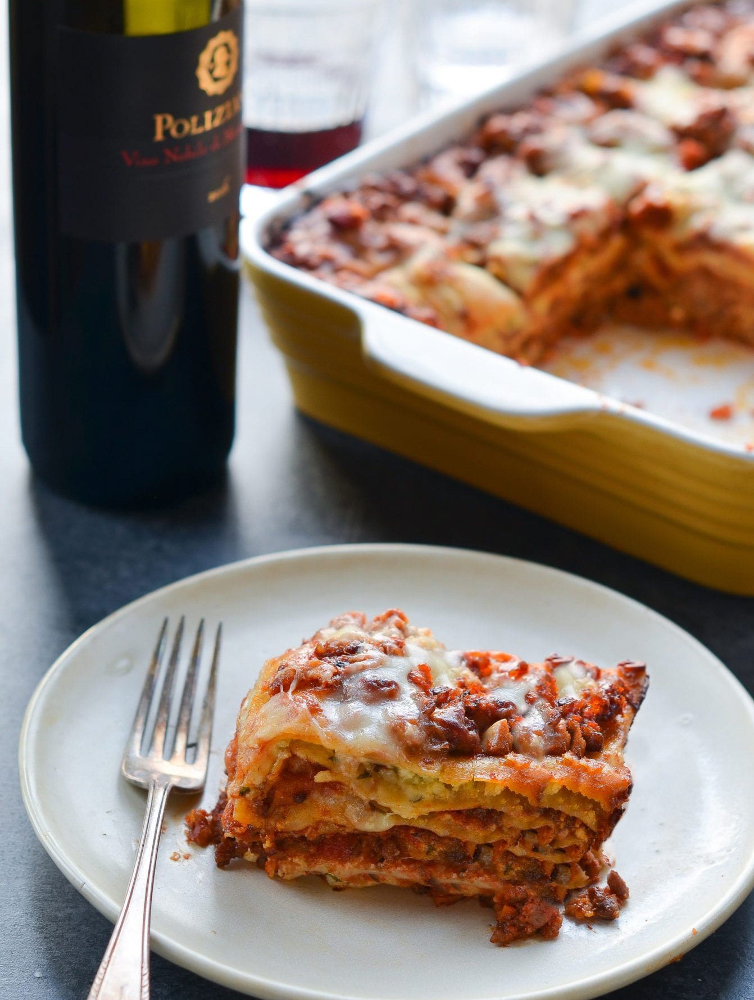

Classic Lasagna

Description
It is an easy dish to make, thanks to the use of oven-ready or no-boil lasagna noodles, which save time and effort while delivering a taste remarkably similar to fresh homemade pasta—a definite win! The noodles are layered with a flavorful meat sauce made with Italian sausage, vegetables, crushed tomatoes, and cream, as well as creamy ricotta, gooey mozzarella, and Parmesan cheese. Baked until bubbly and golden, it’s the perfect cozy dish for a crowd, and it reheats and freezes well, too. This is definitely my go-to lasagna recipe!
Ingredients
- Onion, Garlic, Carrots, and Celery: These vegetables are the base of the sauce, contributing to the depth of flavor.
- Italian Sausage: The key flavor component of the sauce, it adds richness and depth of flavor with its spices and fat content.
- Red Wine: Ådds acidity and complexity to the sauce.
- Canned Crushed Tomatoes: Provides body, acidity, and tomato flavor to the sauce.
- Heavy Cream: Added to the tomato sauce to balance the acidity of the tomatoes and wine.
- Thyme and Bay Leaves: These herbs contribute aromatic flavors to the sauce.
- Ricotta Cheese: Mixed with egg, cream cheese, and Parmigiano-Reggiano, used as a creamy layer in the lasagna, adding moisture and richness.
- Cream Cheese: Adds extra creaminess and tang to the ricotta mixture, and prevents the ricotta from becoming grainy when baked.
- Egg: Acts as a binder in the ricotta mixture, helping it to set and maintain structure when the lasagna is baked.
- Parmigiano-Reggiano: A hard, aged cheese that’s rich in flavor, added to the ricotta mixture and also sprinkled on top of the lasagna.
- Oven-Ready (No Boil) Lasagna Noodles: These noodles do not require pre-boiling, which means you don’t have to worry about them slopping around and sticking together, which is always an issue when using regular lasagna noodles to prepare lasagna. They absorb moisture from the sauce and cheese during baking, cooking to perfect tenderness. I like the Barilla brand.
- Mozzarella Cheese:
Adds stretchy, melty texture to the layers of the lasagna
Steps
- Make the Sauce
- Make the Ricotta Filing
- Assemble the Lasagna